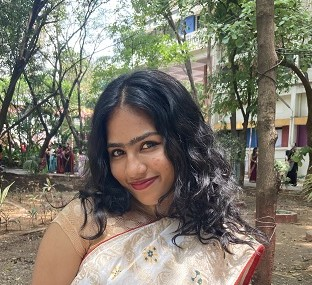

Bhakti Baladawa

Summary
Detail-oriented engineering student with a strong academic record. Eager to leverage technical skills and
problem-solving abilities to contribute to a fast-paced tech environment.
Education
MKSSS's Cummins College of Engineering for Women, Pune
Btech in Electronics and Telecommunication Engineering
Nov 2022- July 2026
- CGPA: 8.7
- Coursework: Problem Solving Through Programming in C, Cloud Computing, MySQL, Basics of Linux OS,
Object Oriented Programming, Data Structures and Algorithms
MKSSS's Cummins College of Engineering for Women, Pune
Honors in Data Science
Aug 2024- July 2026
Technologies
- Languages: C, Java, Python, SQL, R
- Technologies: MATLAB, Keil uVision, Proteus, Xilinx
Experience
Data Analytics Intern, AICTE, VOIS for Tech
Oct 2024- Nov 2024
- Successfully completed a comprehensive course on Basics of Linux OS.
- Superstore Data Analysis: Analyzed sales trends, customer behavior, and regional performance.
- Doctor Visits Analysis: Explored healthcare data to identify patterns in demographics, visit frequency, and outcomes.
- Additional Datasets: Worked on crop recommendation, space rocket launches, unicorn companies, and attrition
analysis to extract insights and trends.
Projects
ML Model for Wine Quality Prediction
- Constructed a Random Forest classifier to predict wine quality, with a focus on applications within the medicinal
wine sector.
- Tools Used: Python
Accomplishments
Vice Chairperson, IEEE CIS Student Chapter
- Organized a Fuzzy Logic Workshop on advanced computational techniques and applications.
- Hosted a Data-Thon, a chatbot-making competition across four domains, fostering innovation and collaboration.
SIH Internal Hackathon Winner '24
Semi-Finalist in Hardware Hackathon in CCOEW Technical Fest '24
Other: